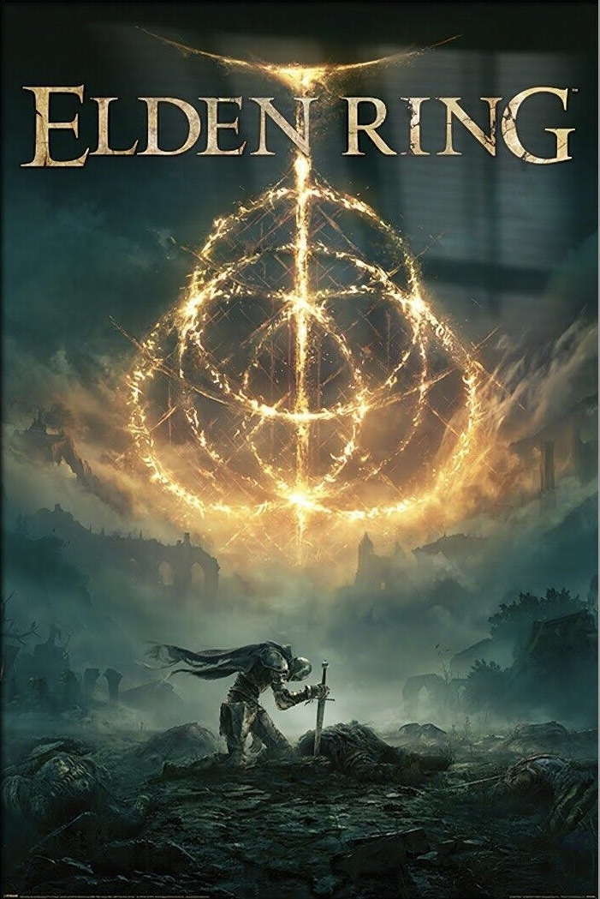

Elden Ring
Elden Ring is a third person action-rpg from FromSoftware It features a vast open world and set pieces that makes you want to go explore. One thing I love about Elden Ring was the fact that there were no markers or hubs clogging your view which enhances the game's experience. The bosses were fun and challenging, however, the story was lackluster and boring to me. I understand that part of the fun was making your own, but I prefer a more linear experience. That is why I give Elden Ring a 9.0/10.0